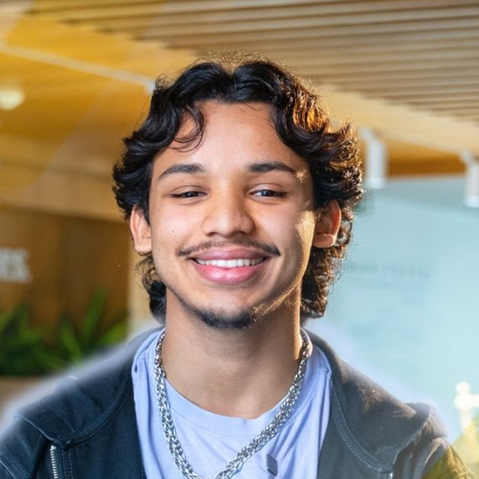

Taha Sabir
Gettysburg College · MBZUAI
Looking for a Fall 2027 PhD position in medical image analysis.
Hi, I am an undergraduate studying Computer Science and Mathematics at Gettysburg College. I am also a research assistant in the BioMedIA Lab at MBZUAI, working with Mohammad Yaqub and Tausifa Jan Saleem. I work on vision-language models for medical imaging. My main question is whether unrelated imaging modalities, like X-ray, ultrasound, dental scans and microscopy, can strengthen each other inside one foundation model, and when each one is better off specializing.
More >Less <
Outside of research, I have played rugby for almost four years and have recently gotten really into chess. I grew up on a farm, so I love being outdoors, and I have three dogs, two cats and 75 chickens. I have been making music for over ten years: I play guitar, bass, piano and drums and produce my own tracks. I also like fixing old electronics and vlogging my trips and college life as an international student in the US.
Research
My current research looks at how one vision-language model can handle many kinds of medical images at once. At MBZUAI, I led our team to first place in MICCAI FLARE 2026 Task 3, where we adapted a Qwen3.5-9B model with LoRA adapters for diagnosis, detection, counting and report generation. I now lead a four-student follow-up study comparing one shared adapter with task-specific adapters, and my undergraduate thesis maps how much different modalities help each other.
Before that, I took part in MBZUAI's UGRIP program in June 2026, where our project won Best Project. I have also built computer-vision tools for video at Odysser, and spent a summer at Gettysburg building a robot that tunes a guitar from a single strum using real-time pitch detection.
Publications
Multimodal Medical Image Parsing with Task-Specific Low-Rank Adapters
T. Sabir, A. Montero Molina, T. Q. Ly, V. Dmitrenko, M. Yaqub, T. J. Saleem
Accepted, MICCAI 2026 FLARE Challenge (LNCS)
Sharing or Specializing? A Systematic Study of Parameter-Efficient Vision-Language Model Adaptation for Heterogeneous Medical Image Analysis
T. Sabir, A. Montero Molina, T. Q. Ly, V. Dmitrenko, M. Yaqub, T. J. Saleem
In preparation
Contact
Taha Sabir
Undergraduate Researcher
Gettysburg College
Department of Computer Science
Gettysburg, PA